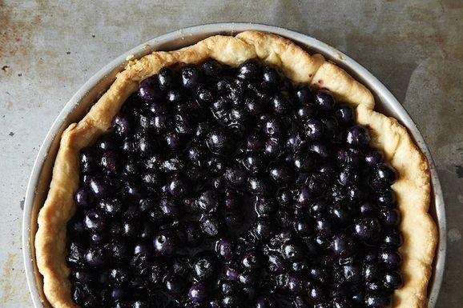

BLUEBERRY TART
posted by KYOKO on DECEMBER 1st 2015

This beautiful tart is bursting with the fresh flavor of blueberries. It has the best of both worlds with cooked and raw blueberries. This is one of my favorite summer recipe. It is so good you will definitely want to make it again and again.